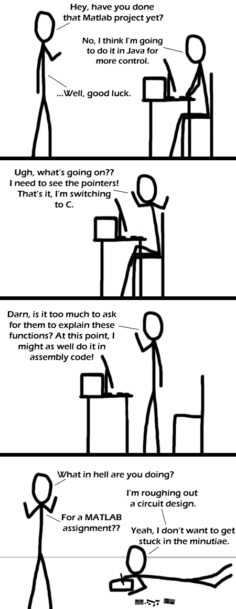

Comic JK 277
When I Feel Like It
⇤
<
?
>
⇥

⇤
<
?
>
⇥
Forum
.
RSS
.
Digg
.
Facebook
.
Reddit
.
Twitter
.
Stumbleupon
Enter your thoughts mom number 277 here. Please, no slamming, rolling, or squeaking. If you use an open standard library (openjdk, glibc), you can view the source of the functions you're calling... Combine that with open hardware...! METHLAB makes YOU make moneys* MATLAB, fuck-yeah. With so many built in functions and loops being intuitive why not use it? >a student version is pretty cheap. I think 100 if you don't get any of the addons. >>Still costs too much for me :( >It's proprietary software >>That's what SciLab is for. >>> No, that's what Gnu Octave is for. matlab kick ass >MathPy! Matlab is too old cocaine too You could have just done the project by hand... >Yes, different comic. This reminds me of how people think I'm crazy for enjoying VHDL and Verilog. >People call me crazy for liking Lisp. They're all foolth >>you mean >>(call >> People >> me >>(for >> crazy >> (liking Lisp) >> ) >>) >>> So Lisp is VSO then? *i love the alt text and the part when that squirrel eats his short (? Weirdly enough, in my uni course this semester, I've learned MATLAB, Java and Verilog ^_^ > Which one did you enjoy the most? >> Verilog. Arbitrary registers and wires are fantastically useful. MATLAB is ... ewww. So slow WolframAlpha! That's one hairy yak. >Like your anus! La Tuya! <-- my mom literally posted this. It's a running joke in my family, and she came here after following a link I posted on facebook. made me lulz. > Hi your anus! Do you remember me from last night? You probably still feel sore from the herpes. As someone that just took their Comp Arch 1 final, I greatly appreciate this!